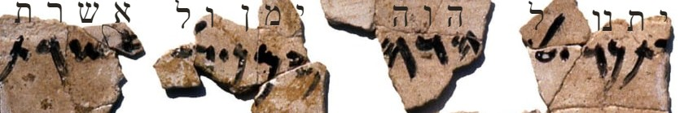

Durante siglos, YHWH tuvo una esposa. Su nombre aparece en la piedra, en el barro y —a regañadientes— en la propia Biblia. Esta es una excavación hasta encontrarla.
Desciende por las capas↓
Vamos a hacer una excavación. No en la tierra, sino en el texto y en los hallazgos: bajaremos capa por capa, de lo que se ve en la superficie a lo que quedó enterrado en el fondo. Al final de este descenso hay una diosa —y la historia de cómo alguien intentó, casi con éxito, borrarla.
Capa 1 · La superficie
Una palabra incómoda en la Biblia
Si uno lee el Antiguo Testamento con atención, tropieza una y otra vez con la palabra Aserá —unas cuarenta veces. Casi siempre en un tono de condena: los reyes “buenos” cortan las aserás, los reyes “malos” las erigen. Aparece como algo que hay que destruir, un objeto de culto prohibido plantado junto a los altares.
A primera vista parece solo un poste o un árbol sagrado. Pero, ¿por qué tanta insistencia en destruirlo? ¿Por qué un objeto de madera merece semejante furia? La superficie esconde algo. Sigamos bajando.
Primer indicio: la Biblia no ataca las cosas neutras. La intensidad de la condena delata que aquí había algo importante en juego.
Capa 2 · El objeto y el nombre
El poste que llevaba el nombre de una diosa
Aquí aparece la primera sorpresa. La palabra aserá designa dos cosas a la vez: un objeto de culto (un poste o árbol sagrado) y el nombre propio de una diosa. El objeto se llama así porque la representa —igual que una cruz representa algo más que dos maderos.
Y esa diosa no era una figura menor. Ya la conocimos en la primera serie de este blog: en los textos de Ugarit, Aṯiratu (Aserá) es la gran diosa madre, la consorte del dios El, “la que camina sobre el mar”, madre de los setenta dioses. Una reina del panteón.
Lo que encontramos: el objeto que los reyes cortaban no era un palo cualquiera. Llevaba el nombre —y la presencia— de la diosa madre más importante de Canaán.
Capa 3 · La evidencia en la piedra
“Por YHWH… y por su Aserá”
Descendemos a la evidencia que no pasó por manos de editores religiosos: la epigrafía, las inscripciones escritas por gente común. Y aquí el hallazgo es sísmico.
En Kuntillet ʿAjrud (un cruce de caravanas en el Sinaí, hacia 800 a.C.) y en Khirbet el-Qom (cerca de Hebrón), aparecieron inscripciones de bendición que dicen, textualmente: “Te bendigo por YHWH… y por su Aserá.”

Transliteración al hebreo de parte de la primera línea de la inscripción del pithos de Kuntillet ʿAjrud, que menciona a YHWH “y su Aserá”.Pashute, CC BY-SA 4.0, vía Wikimedia CommonsLos dos yacimientos donde apareció la fórmula “YHWH y su Aserá”, respecto a Jerusalén. Mapa esquemático.
Léelo de nuevo. Su Aserá. El dios de Israel, nombrado junto a una figura que se presenta como suya —su consorte, o el símbolo de ella—, en una fórmula de bendición cotidiana. No en un texto de idólatras condenados, sino en la escritura espontánea de israelitas corrientes.
El hallazgo central: hacia el 800 a.C., para mucha gente en Israel, YHWH no estaba solo. Tenía a Aserá a su lado. El monoteísmo estricto todavía no era la realidad de la calle.
Capa 4 · Dentro del Templo
La diosa estuvo en el Templo de Jerusalén
Ahora bajamos al lugar más sagrado, y la propia Biblia —sin querer— nos da la prueba. En su afán por condenar el culto a Aserá, los textos confiesan hasta qué punto estuvo presente.
El rey Manasés “puso una imagen de Aserá en el Templo” (2 Reyes 21:7). Había en el Templo mujeres que tejían vestiduras para ella (2 Reyes 23:7). Durante la reforma de Josías (622 a.C.), hubo que sacar del Templo los objetos de Aserá y quemarlos fuera de la ciudad (2 Reyes 23:6).
Piénsalo: no se puede sacar de un lugar algo que nunca estuvo dentro. La reforma que la expulsó es, paradójicamente, la mejor prueba de que estuvo dentro durante generaciones.
La confesión involuntaria: la Aserá no era un culto marginal de las afueras. Estuvo en el corazón del Templo de Jerusalén, con su imagen y su clero, hasta que una reforma la arrancó.
Capa 5 · El fondo · el borrado
Cómo se borra a una diosa
Hemos llegado al fondo. Y lo que hay aquí no es la diosa: es el acto de borrarla. Porque la Aserá que encontramos en las capas superiores no desapareció por olvido natural. Fue suprimida deliberadamente.
La reforma de Josías y la teología que la acompañó (la del Deuteronomio) hicieron dos cosas. Primero, destruir los objetos y las imágenes. Segundo, y más duradero, reescribir la memoria: en los textos que se conservaron, Aserá quedó reducida a un “poste” abominable, a una nota de idolatría condenada, despojada de su rango de diosa madre. El nombre sobrevivió, pero rebajado a insulto.
Y aun así, no lograron borrarla del todo. Quedó su nombre en la piedra del desierto, quedó su huella en las propias condenas bíblicas, quedó —como veremos en los próximos episodios— su función, que reapareció una y otra vez bajo otros nombres.
En el fondo de la excavación: no una diosa muerta, sino una diosa enterrada viva por una reforma teológica. Y las cosas enterradas vivas tienen la costumbre de volver.
Lo que revela la excavaciónEl monoteísmo tuvo que construirse
La lección de Aserá es la más importante de todo el blog, y por eso abre esta serie. Demuestra, con evidencia material que no pasó por censura, que el monoteísmo de Israel no fue su punto de partida, sino su punto de llegada. Durante siglos, la religión real —la de la gente, la del propio Templo— incluyó a una diosa junto a YHWH.
El “un solo Dios, sin nadie más” no describía la fe original de Israel: era un proyecto, impulsado por reformadores y profetas, que tuvo que imponerse contra una realidad más plural y antigua. Y Aserá es la prueba viviente de esa realidad, precisamente porque hubo que hacer tanto esfuerzo para borrarla.
En simple
Aserá demuestra que YHWH no fue siempre soltero. Tuvo, en la práctica religiosa real, una consorte —la vieja diosa madre—. El monoteísmo llegó después, y para llegar tuvo que borrarla. Pero el borrado dejó huellas, y por eso hoy podemos reconstruirla.
Hacia dónde va la serieLa primera de muchas
Aserá es solo la primera. A lo largo de esta serie veremos que lo femenino divino, expulsado por la puerta, vuelve una y otra vez por la ventana: como una Reina del Cielo a la que unas mujeres se negarán a abandonar, como la Sabiduría que juega junto a Dios, como la Shekhaná que habita entre su pueblo, y —siglos después— con rasgos heredados por una figura que quizá no esperarías.
Próxima entrega
La Reina del Cielo
En Jeremías 44, un grupo de mujeres exiliadas se enfrenta al profeta y se niega a dejar de adorar a su diosa. Una de las escenas más extraordinarias —y silenciadas— de la Biblia.
Nota sobre el rigor y las fuentes
La existencia del culto a Aserá en Israel y su asociación epigráfica con YHWH son consenso amplio; las inscripciones de Kuntillet ʿAjrud y Khirbet el-Qom son reales y muy estudiadas. Referencias: los trabajos de William Dever (¿Tenía Dios una esposa?) y Mark S. Smith.
En debate: si “su Aserá” designa a la diosa en persona o al objeto de culto que la simbolizaba (el sufijo posesivo hebreo raramente se une a nombres propios, lo que alimenta la segunda lectura). Ambas mantienen la conclusión de fondo —una presencia femenina divina junto a YHWH—, pero conviene no afirmar más de lo que la evidencia permite.
Las citas bíblicas son traducción propia orientativa. Nada de esto afirma ni niega la validez religiosa de los textos.